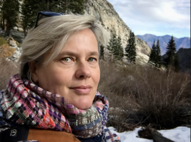

Tito, born in the vibrant year of 2002, has illuminated the world with his remarkable talents as an extraordinarily gifted photographer. From an early age, Tito displayed an innate understanding of composition, light, and the power of storytelling through the lens of a camera. His journey as a photographer commenced as a captivating dance with pixels and colors, gradually evolving into an enchanting symphony of visual narratives that leave audiences awe-inspired.
Tito's lens acts as a magical portal, transporting viewers into the heart of nature's most breathtaking vistas. With each click, he captures not just images, but the very essence of the moment - the gentle caress of a morning breeze, the radiant kiss of sunlight on dew-kissed petals, and the whispered secrets shared between shadows and light. His photographs are more than frozen memories; they are living canvases that evoke emotions, awaken nostalgia, and forge connections with the beauty that surrounds us.
What sets Tito apart is not just his technical prowess, but his unwavering passion and dedication to his craft. His insatiable curiosity leads him to explore every nook and cranny of his surroundings, unearthing hidden beauty in the most unexpected places. Tito's ability to find the extraordinary within the ordinary has earned him accolades from both seasoned photographers and appreciative audiences.
In an era inundated with visuals, Tito's work stands as a testament to the art of photography. His images not only capture landscapes but paint landscapes within the human soul. Tito, the visionary photographer born in 2002, has woven an exquisite tapestry of visuals that beckon us to pause, reflect, and marvel at the breathtaking beauty that graces our world.
Nigerian photographer, painter, artist, and editor of Mania Magazine Kelechi Amadi Obi is skilled. In numerous international exhibitions, including Snap Judgment: New Place in Contemporary African Photography, New York International Photography Center (2006), his photographic and visual artwork has earned him recognition on a global scale. According to one account, he was one of Nigeria's first famous photographers and "helped put Nigerian photography on the world map." He is described as "a big force in Nigeria's artistic scene" by Vogue. One of the top photographers in Africa, Kelechi deserves to be listed among the Top Photographers in the World in 2023.

Danish-born Mette Lampcov works as a freelance documentarian photographer in Los Angeles. After relocating to the US 13 years ago, she studied fine art in London, England.
Projects about gender-based violence and illegal migrant labourers in California are among her endeavours. She is presently focusing on a lengthy "Water to Dust" project that explores how climate change affects Californians and their surroundings.
In connection with labour rights and social justice, she has done much work with indigenous and undocumented migrant farm labourers in California's Coachella Valley and central valley. Her work has centred on a long-term project regarding the climate issue over the past seven years, a photographic account of how climate change affects Californians and their surroundings. She is well-versed in California's water problems and the ecology of forests and fires. She has worked on climate change-related issues like drought, flooding, wildfires, tree morality, public health, and climate justice.